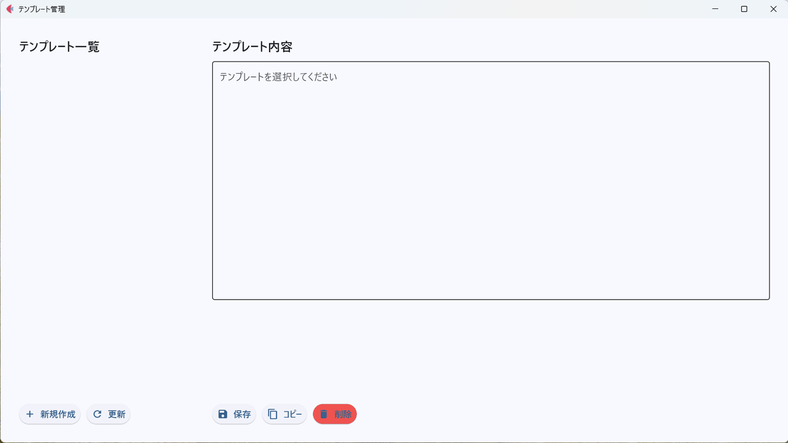
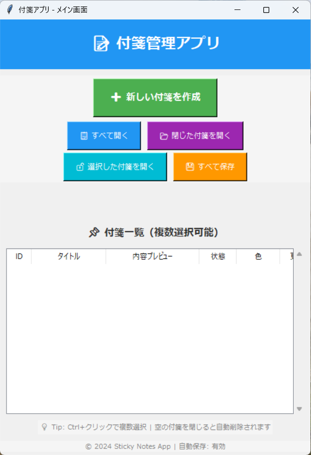
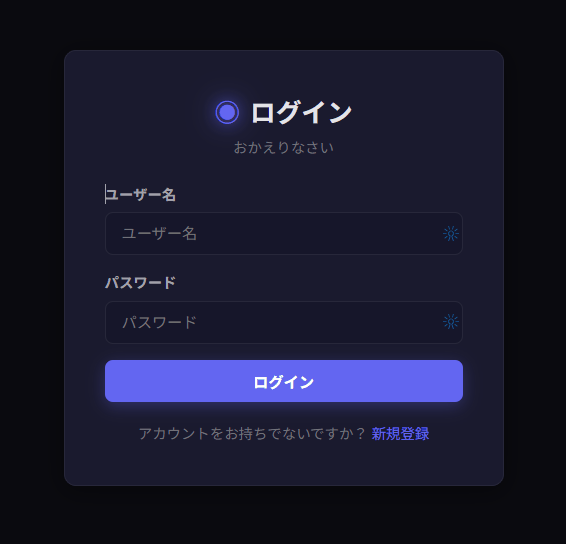
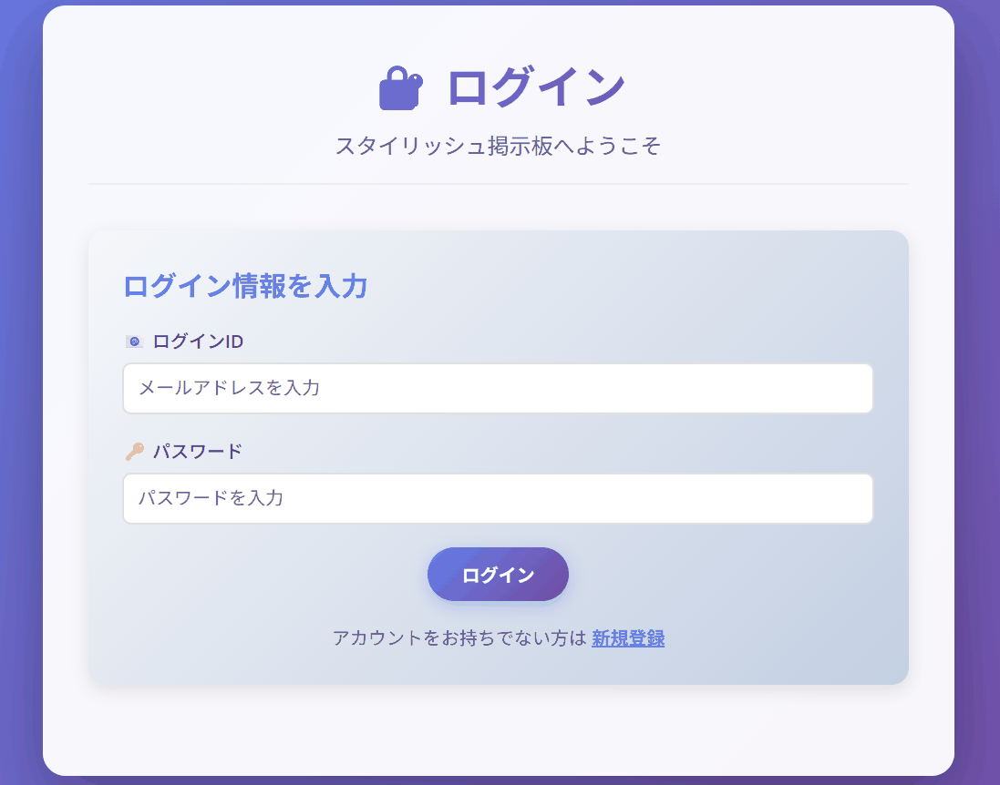

主作品と、学習を支える補助作品
Linuxの構築・運用を学ぶ「Server Monitor」を中心に、ITサポート資料と開発学習作品を紹介します。個人学習・訓練の成果物で、実務実績ではありません。
文章・コード作成にはAIを利用し、本人の操作とCI・AIの実行を区別しています。独力での再現・説明は未確認です。実施者と確認範囲は動作確認の記録をご覧ください。
設計
基本・詳細・パラメータ
構築・試験
Ansible / Compose / E2E
監視・ログ
Prometheus / Grafana / Loki
復旧・引き渡し
Runbook / Checklist
PC Kitting
手順書
AD / M365
棚卸し
Network
一次確認
Ticket
記録の型




